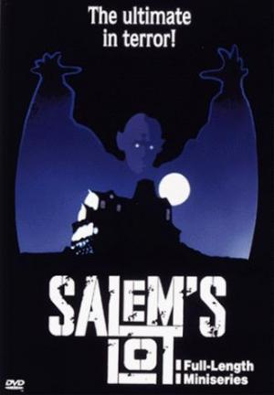

Stephen King, el Shakespare del terror
Si alguna vez pensaste que leer terror y suspenso no era para vos dejame mostrarte la magia de King Stephen Edwin King (Portland, Maine; 21 de septiembre de 1947), más conocido como Stephen King y ocasionalmente por su pseudónimo Richard Bachman, es un escritor estadounidense de novelas de terror, ficción sobrenatural, misterio, ciencia ficción y literatura fantástica. Sus libros han vendido más de 350 millones de ejemplares 1 y en su mayoría han sido adaptados al cine y a la televisión. Ha publicado 61 novelas (siete de ellas, bajo el pseudónimo Richard Bachman) y siete libros de no ficción.
El misterio de Salem's Lot
Sinopsis:
Veinte años atrás; por una apuesta infantil; Ben Mears entró en la casa de los Marsten. Y lo que vio entonces aún recorre sus pesadillas. Ahora; como escritor consagrado; vuelve a Salem's Lot para exorcizar sus fantasmas. Salem's Lot es un pueblo tranquilo y adormilado donde nunca pasa nada...; excepto la antigua tragedia de la casa de los Marsten. Y el perro muerto colgado de la verja del cementerio. Y el misterioso hombre que se instaló en la casa de los Marsten. Y los niños que desaparecen; los animales que mueren desangrados... Y la espantosa presencia de Ellos; quienesquiera que sean Ellos.
En sintesis...
Si decides que leer una historia de vampiros que hasta te haga soñar con ella este libro es el ideal.
Es una de las obras mas antiguas de King y sin embargo aun sigue estremeciendo a la gente hasta el dia de hoy
El resplandor
Portada de el resplandor, publicada en 1989
El resplandor (título original The Shining) es la tercera novela de terror del escritor estadounidense Stephen King, publicada en 1977.
Stephen King se basó en el cuento La máscara de la Muerte Roja de Edgar Allan Poe. En varias partes del libro se hace alusión a esta: «...y la muerte roja cayó sobre todos ellos...». Además ha dicho que el libro explora el tema del alcoholismo y la relación de padres e hijos.
El oscuroorigen del libro:
Para poder llevar a cabo esta novela su autor encontró una doble inspiración. Por un lado, en el cuento La máscara de la muerte roja (1842), de Edgar Allan Poe. Por otro, en una escapada que hizo junto a su mujer. Decidieron pasar unas minivacaciones en un hotel (Hotel Stanley) situado en Colorado, donde fueron los únicos huéspedes. Allí, el escritor paseó por la noche por las instalaciones, mientras su esposa dormía. De madrugada, él se despertó con una pesadilla en la que había visto que su hijo deambulaba por el pasillo del establecimiento gritando y perseguido por una manguera de incendio.
El propio escritor ha manifestado que muchos de los impulsos agresivos que tenía los vertió sobre el protagonista, Jack Torrance, y eso fue un verdadero alivio y una liberación.
En resumen...
Este libro tuvo una adaptacion en pelicula muy famosa. Si la historia de Dany y los extraños sucesos del hotel te aterran la opcion en pelicula lo hara un poquito menos. Asi es, solo un poquito.